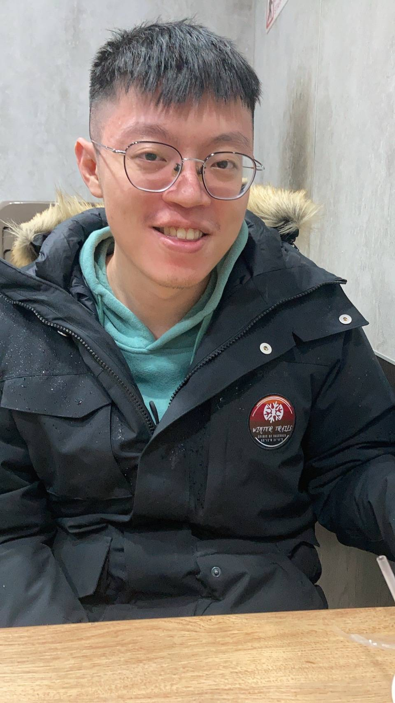

我的履歷
| 個人資料 |
|---|
| 姓名：張凱皓 |
 |
| 性別：男性 |
語言：中文精通、英文精通 |
| 生日：1995/6/9
| 星座：雙子座 |
| 聯絡資訊 |
|---|
| 電話：0912327933 |
信箱：terry611004@gmail.com |
| 社群網站：
|
|---|
| 人格特質： |
我是一個對事對物充滿責任感的人。每當看到有人需要幫忙也會熱心的詢問並提供協助。 |
| 職涯規劃： |
我希望轉職成為一名優秀的前端工程師，本身非本科系出生，在過去自己學習程式語言的路上往往會遇到許多挫折。不過我仍可在擊敗挫折後重新站起。希望可以透過密集的培訓課程成功完成轉職。 |
| 能力技術： |
目前已可以使用基礎的JS/HTML/CSS製作簡易的網頁。 |
| 產業觀點： |
隨著科技日新月異，科技產業所需要的人力也隨之增加，有前端需求的軟體科技公司也越來越多。
求職動機: 希望可以取得更好的待遇。目前前端需求產業所需的人才大多需要即戰力，因此，希望可以在進入密集的集訓營後學到更多並且獲得更多的機會。 |
| 工作經驗： |
職位、組織名稱、時間: 售服助理、欣鴻精密機械股份有限公司、2018/12 ~ 2022/5。
描述S情境T任務A行動R結果 主要工作事項是接收代理商的售後服務相關需求，每當接收後，與相關部門聯繫取得解決方案後回覆給客戶。售後服務狀況包刮產品損壞、零件遺失、零件報價出貨、技術文件製作與參數設置等。因為使用之設備皆為客戶生產之機械，所以在提供服務上的速度都須即時。所以在遇到較為情緒化之客戶也須保持良好的態度與之回覆以達成和諧的氣氛。主要工作事項外也接管其他部門的助理工作，處理相關產品BOM表的建立與修改，而其餘時間完成主管交辦事項。
其中最令我印象深刻的也是最有成就感的便是有一次因為客戶機器剛過去便接連發生了很多狀況，售服部門的責任便是盡快的完成客戶的需求，當處理完客戶問題後客戶也於以肯定與稱讚，便在後續又下了其他機台的訂單。 |
| 學歷 |
| 大學時期： |
就讀靜宜大學寰宇管理學士學位學程畢業。
大學可以說是目前人生中最精彩的四年，因為科系的畢業門檻要求。皆須至少在國外完成一個學程並待一學年，因此我選擇到了歐洲的愛爾蘭Dublin institute of technology，起初獨自一人到了人生地不熟的地方找公寓也是感覺到充滿挑戰性，不過也很順利地找到了棲身之所，並也遇到不錯的室友。因為大一到大三已經將該修的學分都修完，所以我便選了一些感興趣的商學院課程。其中最讓我感到有趣的便是職場危險的課程，相較於歐美國家，亞洲地區對於職場災難風險的管制看似較為疏漏。課程中最有映像的是當一小把火點燃了，到整個運動場陷入火海的時間僅僅不到十分鐘。大四時也到了歐洲其他國家與同學們見面並出去玩。大二與大三時期也選修了會計部門的學程，所以對於一些稅法上的事情也較有些概念。大學時期，最映像深刻的不外乎就是與同學們一同努力拚出國留學的英文門檻，大家也都很順利的達成了相關門檻並各自前往所選擇的地區。 |
| 高中時期： |
就讀宜寧高級中學畢業。
高中選了宜寧高級中學的應用外文系，起初進去時非常擔心。在鄉下國中畢業的我進入市區的高中仍會擔心是否大家的英文程度都以經出神入化，不過在幾次的簡易測驗後發現了其實我的實力也可以列於前茅因此也比較安心了。就學期間，基本上都還不錯，與同學之間有來有往。當同學有需要時，我也會積極的提供協助與指導。 |
| 國中時期： |
就讀烏日國中畢業。
國中是我人生一個重要的轉捩點，當時的我甚至連英文字母A-Z都唸不出來。而所幸的，遇上了一位極有耐心的周老師，也因此展開我熱愛英文的未來。在周老師耐心的指導並搭配當時的英文電視劇下，我逐漸對英文越來越感興趣。英文成績也從班上倒數提升至全校前十，也為未來的我在英文上奠定了基礎。 |